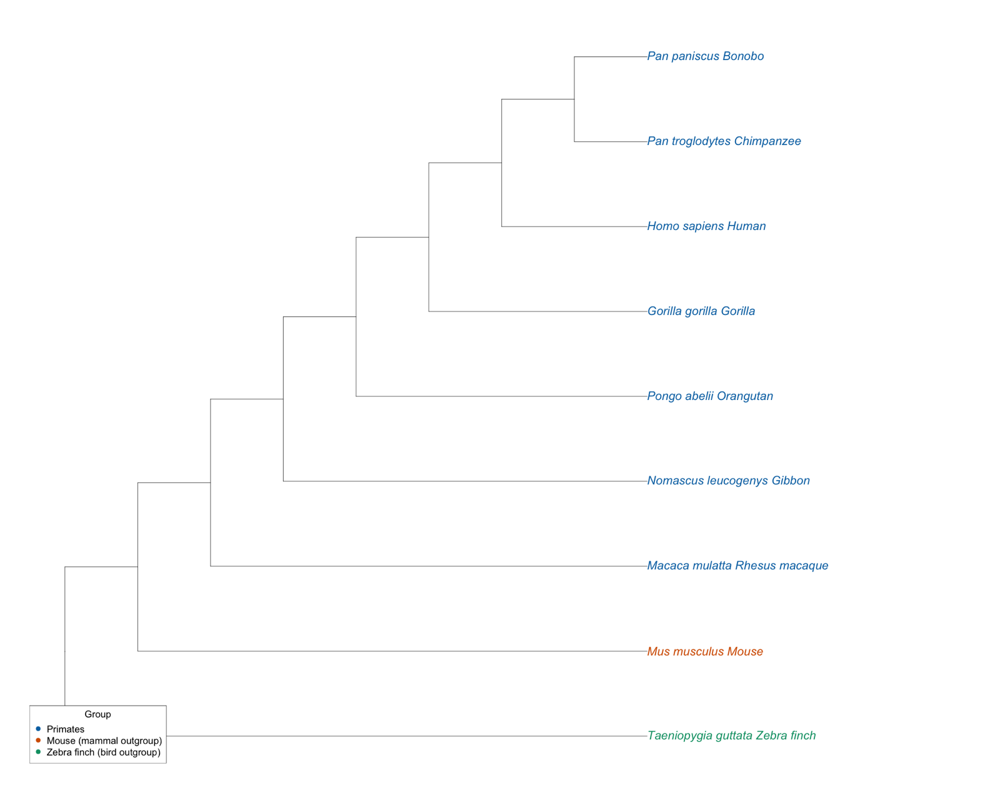
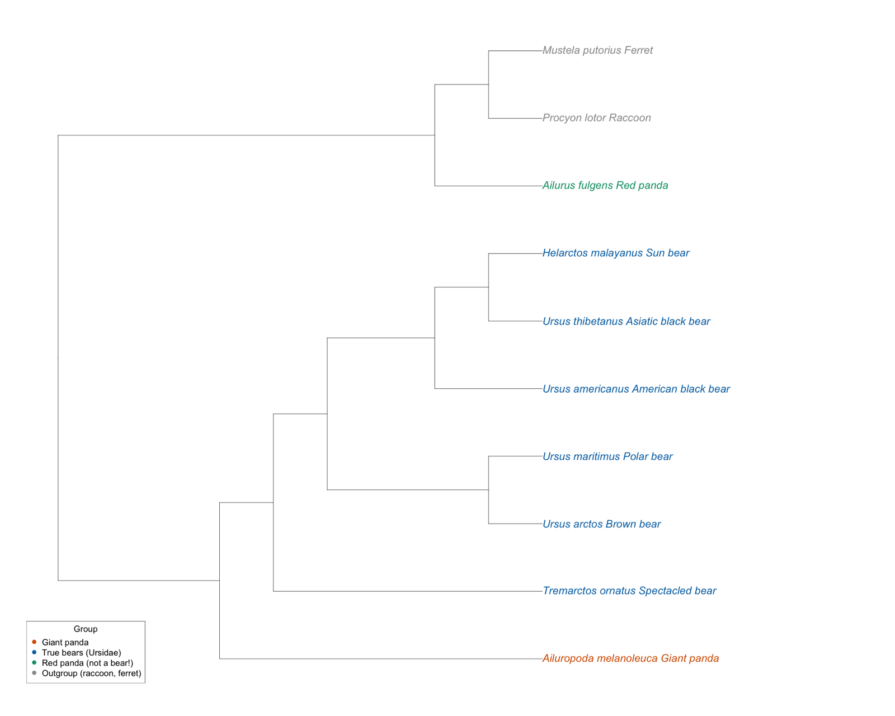
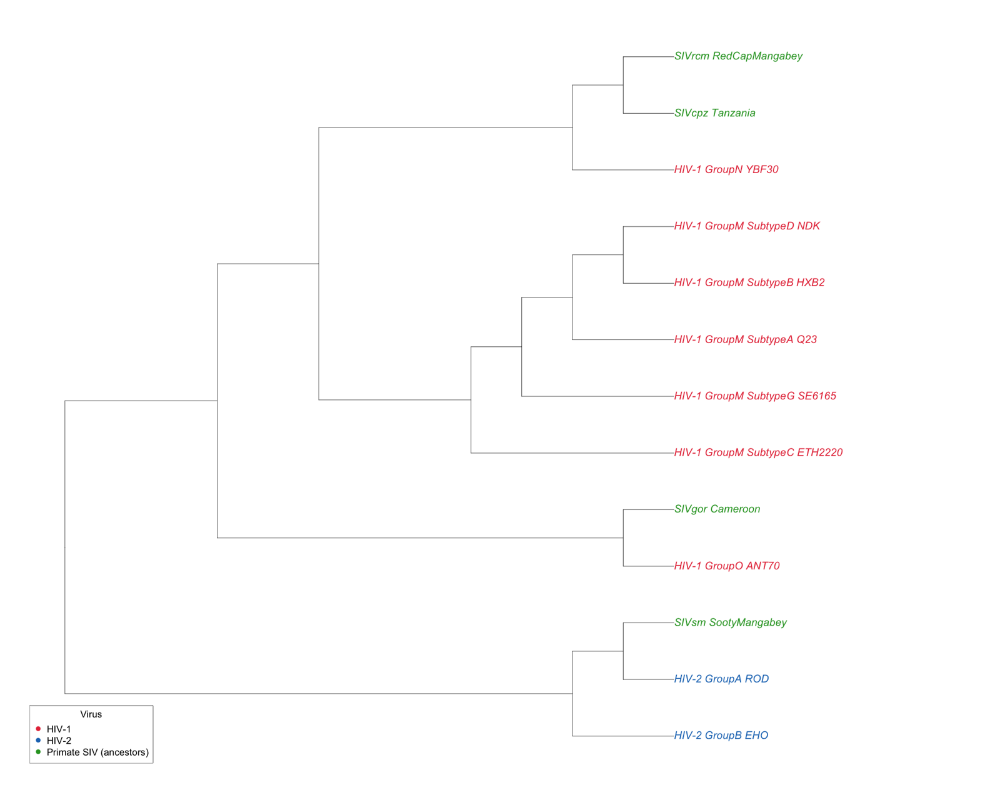
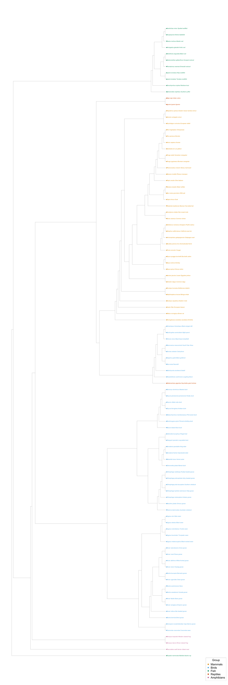
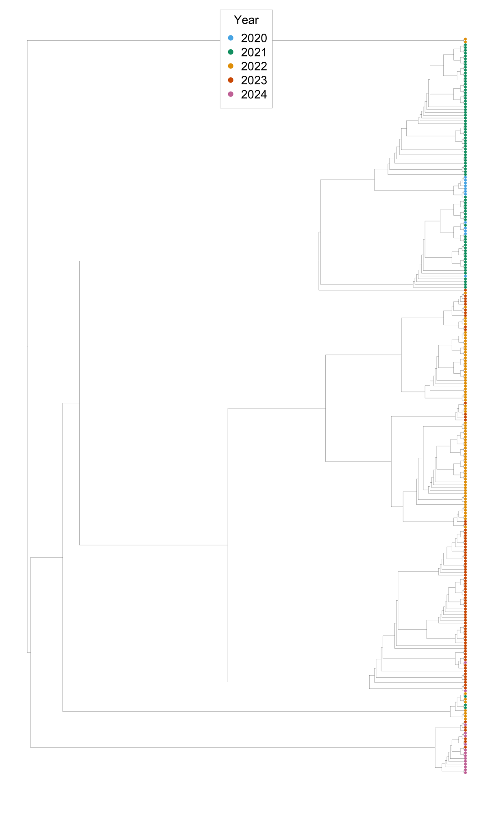
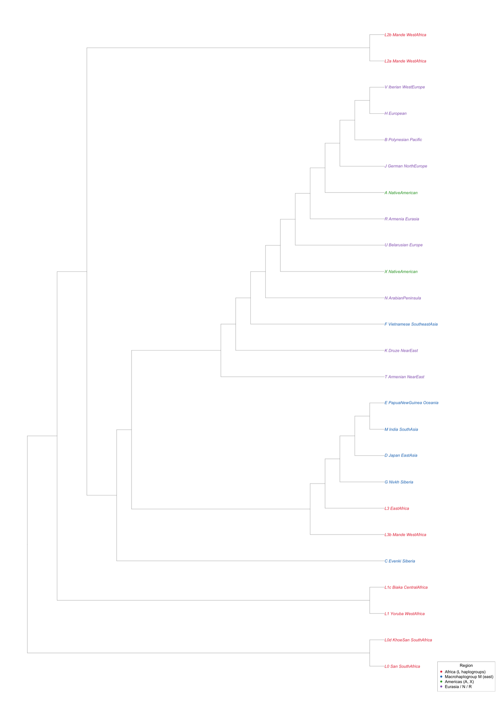
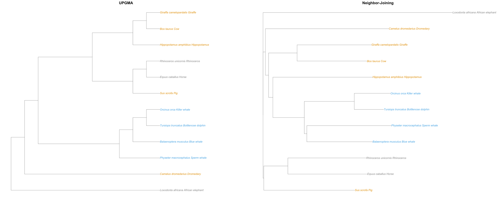

Every dataset in Starter Code/upgma/Data, run through UPGMA. UPGMA assumes a molecular clock: every lineage mutates at the same rate. Watch where that assumption holds and where it breaks.
Nails it matches the accepted treeMostly right shape, some misplacementsMisses gets the famous answer wrong
Great Apes
Nails it
9 mitochondrial genomes · Jukes-Cantor distances
Human, chimpanzee, and bonobo come out together, then gorilla, orangutan, gibbon, and rhesus macaque, with mouse and zebra finch as outgroups. Every split lands where primatologists put it, including chimp and bonobo as each other's closest relatives. Why we care: this is the sanity check. Closely related species with similar mutation rates are exactly the case UPGMA was built for, so if your code gets this one wrong, the bug is in your code, not the biology.

great_apes.nwk drawn with visualize_trees.R · click to zoom
Giant Panda Bears
Nails it
10 mitochondrial genomes · Jukes-Cantor distances
For a century, people argued over whether the giant panda was a bear, a raccoon relative, or something of its own. Our tree puts the giant panda inside the bears as the first branch to split off, while the red panda, despite the shared name and bamboo diet, groups with the raccoon and ferret. Why we care: two animals that look and eat alike turn out to be distant cousins. Sequence data settles a question that anatomy couldn't, and a few dozen lines of Python reproduce the answer.

giant_panda_bears.nwk drawn with visualize_trees.R · click to zoom
HIV Subtypes
Nails it
13 gag protein sequences · edit distances
HIV-2 clusters with SIV from sooty mangabeys. HIV-1 group M (the pandemic strains, subtypes A through G) forms its own cluster, group N sits next to chimpanzee SIV, and group O sits next to gorilla SIV. Why we care: the tree shows that HIV did not jump into humans once. It crossed from other primates several separate times, and each human group sits next to the animal virus it came from. This is how epidemiologists trace where an outbreak came from.

hiv_subtypes.nwk drawn with visualize_trees.R · click to zoom
Hemoglobin (HBA1)
Mostly
100 animals · hemoglobin alpha protein · edit distances
The biggest animal tree we have. Fish group with fish, frogs with the newt, and the geese, swans, and ducks sort into clean clusters. Among mammals, the echidna (an egg-laying monotreme) branches first, and the primates nest exactly right: human beside chimp and bonobo, then gibbon, then the two orangutans. A few placements wander, such as the brown rat near the base of the mammals. Why we care: one protein, about 140 amino acids long, recovers most of the vertebrate family tree. It also shows what scale buys you: with 100 species, a few odd placements stand out against an overall pattern that is clearly right.

hemoglobin.nwk drawn with visualize_trees.R · click to zoom
SARS-CoV-2 in the UK
Mostly
261 spike proteins, Nov 2020 to Mar 2024 · edit distances
This tree has a hidden time axis. Samples taken far apart in time should land far apart in the tree, and they mostly do: tree distance and the gap between sampling dates correlate at about 0.56 (Spearman). Cutting the tree into a few groups gives an early cluster (Nov 2020 to Dec 2021), a tight cluster from Dec 2021 to Feb 2022, around when Omicron arrived, a large 2022 to 2024 cluster, and a separate late-2023 to 2024 group. Two samples from Feb 2022 sit off on their own. Why we care: this is evolution we lived through, measured in months instead of millions of years. The waves of variants are visible in the tree, and so is the noise: a single odd sample can be a new variant or a sequencing error.

SARS_spike.nwk drawn with visualize_trees.R · click to zoom
Human mtDNA Haplogroups
Mostly
25 human mitochondrial genomes · coding region · Jukes-Cantor distances
The deepest split in the tree separates the L0 lineages (San and Khoe-San of southern Africa), then L1 (Yoruba, Biaka), then L2, and every non-African lineage sits nested inside the African diversity. That is the out-of-Africa story, recovered from DNA alone. The fine structure is messier: the Native American haplogroups A, B, C, and D do not cluster together. Why we care: these genomes differ by less than half a percent, so there is very little signal to work with. The root of human history comes through clearly, but the recent branches blur. That shows the limit of what this data can say, which matters as much as the result itself.

mitochondrial_haplogroups.nwk drawn with visualize_trees.R · click to zoom
Cytochrome C
Misses
16 eukaryotes · cytochrome c protein · edit distances
This is the textbook molecular-clock protein, and yeast, bread mold, and Arabidopsis do split off as the outgroup they should be. But human and chimp land away from the other primates. Gorilla, orangutan, and rhesus form their own group outside all the other animals, and chicken lands among the mammals. Look at the matrix: human is 28 edits from gorilla but only 9 from dog. That points to a problem with those primate sequences, not with UPGMA. Why we care: garbage in, garbage out. When a tree looks wrong, the first suspect is the data. Ask the class: how would you check whether those sequences were the right protein?
cytochrome_c.nwk drawn with visualize_trees.R · click to zoom
Cetaceans
Misses
12 mitochondrial genomes · Jukes-Cantor distances
The famous result is that whales evolved from inside the even-toed hoofed mammals, and the hippo is the whale's closest living relative. UPGMA misses it. The whales and dolphins cluster together, but the hippo goes with the cow and giraffe, and the pig lands with the horse and rhino, which are odd-toed animals from a different order. Why we care: this is what it looks like when the molecular clock assumption fails. Lineages that mutated at different rates get pulled into the wrong places. It is the best motivation in this folder for a method that does not assume a clock: run neighbor-joining on the same matrix (right) and the hippo lands beside the whales.

cetaceans_upgma_vs_nj.nwk drawn with visualize_trees.R · click to zoom
Running them yourself
Open a terminal in your python/src/upgma folder (your finished UPGMA code, with the Data folder from Starter Code/upgma).
Build one tree, for example the Great Apes (use python instead of python3 on Windows):
for f in Data/*/*.mtx; do python3 main.py "$f" Output; done
Each run writes a Newick file to Output/. To draw the trees, open visualize_trees.R in RStudio and click Source; the pictures appear in Images/. The script draws every dataset, so build all eight trees first, or comment out the calls at the bottom of the script for the trees you have not built. Cytochrome C is commented out by default; uncomment CytochromeC() to draw it.
Scroll or pinch to zoom · drag to pan · double-click to zoom in · 0 fits · Esc closes